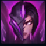
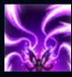
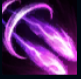
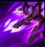
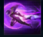

Kai'sa
| Kai'sa Daughter Of The Void | |
|---|---|
| Release date | 07.03.2018 |
| Class | Marksman |
| Positions | Marksman |
| Resource | Mana |
| Range type | Ranged |
| Adaptive type | Ranged |
| Base statistics | |||
| Health | 600 – 2096 | Mana | 344.88 – 990.88 |
| Health regen. | 3.5 – 12.85 |
Mana regen. | 8.2 – 15.85 |
| Armor | 28 – 79 | Attack damage | 59 – 93 |
| Magic resist. | 30 – 38.5 | Crit. damage | 175% |
| Move. speed | 335 | Attack range | 525 |
După ce a fost înghițită de Vid pe când era doar o copilă, Kai'Sa a reușit să supraviețuiască, dând dovadă de o tenacitate și de o voință ieșite din comun. Experiențele prin care a trecut au transformat-o într-un vânător mortal, iar unii cred că e vestitoarea unui viitor terifiant. După ce între ea și o carapace vie a unei creaturi din Vid s-a format o simbioză fragilă, Kai'Sa trebuie să decidă dacă poate să-i ierte pe muritorii care o văd ca pe un monstru și să lupte alături de ei pentru a învinge întunericul... sau dacă să uite ce a fost odată și să lase Vidul să înghită lumea care a respins-o. |  |
A DOUA PIELE Atacurile de bază ale Kai'Sei aplică cumuluri de ''Plasmă'', provocând daune magice bonus tot mai mari. Efectele de imobilizare folosite de aliați aplică și ele cumuluri de ''Plasmă''. În plus, obiectele cumpărate de Kai'Sa îi îmbunătățesc abilitățile de bază și le oferă proprietăți mai puternice. |
||
|---|---|---|---|---|
 |
POTOP ICATHIAN Kai'Sa lansează un grup de rachete care caută ținte în apropiere. ''Arma vie'': ''Potopul icathian'' este îmbunătățit, lansând mai multe rachete. |
|||
 |
UNDA VIDULUI Kai'Sa lansează o rachetă cu rază lungă, însemnându-și inamicii cu cumuluri ale pasivei. ''Arma vie'': ''Unda Vidului'' este îmbunătățită, aplicând mai multe cumuluri ale pasivei și reducând timpul de reactivare al abilității dacă lovește campioni. |
|||
|  |
SUPRASARCINĂ Kai'Sa își crește pentru scurt timp viteza de mișcare, apoi își crește viteza de atac. ''Arma vie'': ''Suprasarcina'' este îmbunătățită, oferind invizibilitate pe o durată scurtă. |
|||
 |
INSTINCT DE PRĂDĂTOR Kai'Sa se năpustește în apropierea unui campion inamic. |